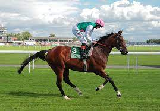
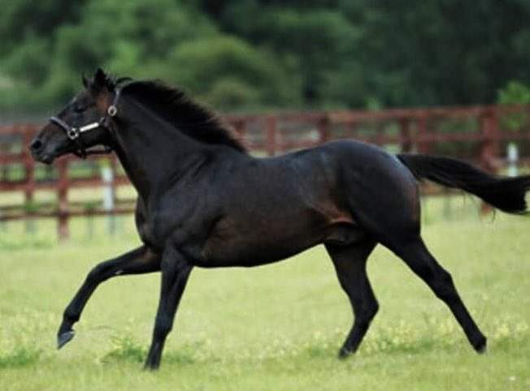
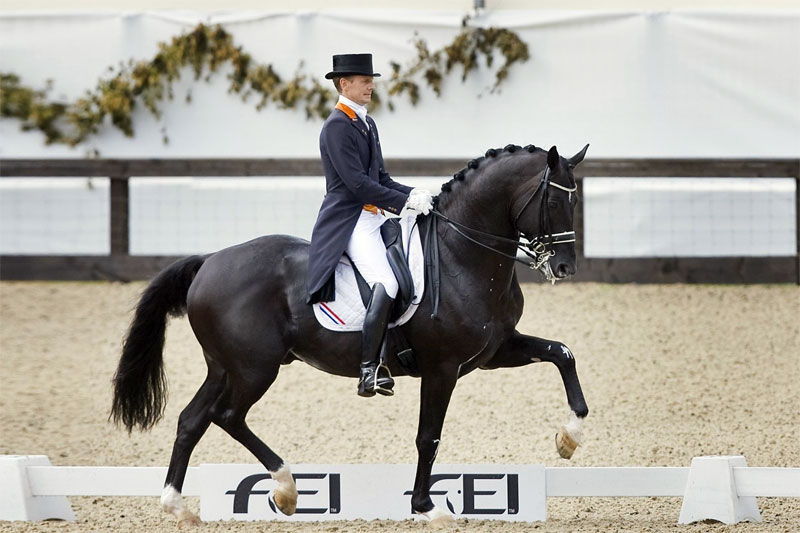
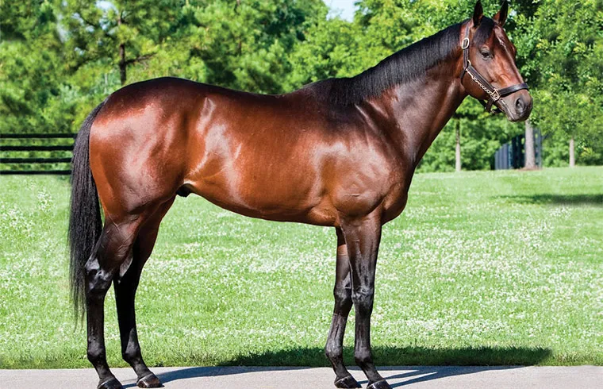

No. 1 Caballo Fusaichi Pegasus
Caballo Fusaichi Pegasus
Es considerado el caballo más caro del mundo, fue vendido en 70.000 millones de dólares, además de ser reconocido por su talento ya que ganó el Derby de Kentucky en el año 2000. Su nombre es una combinación del
nombre de su prietario, “Fusao”, y la palabra japonesa para uno, “ichi”, que significa el # 1 o el mejor. Ganó 2 millones de dólares durante su vida activa, en la actualidad fue vendido a un criador irlandés
y tiene una cuota de 700op0 dólares para su manutención.
No. 2 Caballo Shareef Dancer
Caballo Fusaichi Pegasus
Fue reconocido por ser el mejor caballo de carreras y ganar el Torneo Dubai Millennium, además de ser seleccionado como uno de los mejores sementales del mundo, obteniendo ganancias mayores a 2 millones
de dólares por sus crías. Fue comprado
por 40 millones de dólares en 1983 por Emir de Dubai, pasando hacer el 2 caballo más caro del mundo.
No. 3 Caballo Totilas
Fue vendido por 21 millones de dólares, y fue catalogado como el más destacado caballo de Doma Clásica en la Orbe, lo que significa que llevó un entrenamiento metódico y equilibrado formándolo como atleta. Gracias a su potencial ganó numerosos récords anotando más de 90 puntos en una competencia. Después de su grandes victorias fue vendido en el 2011 a una propiedad alemana, que con los años fue denunciada por maltrato animal, lo que significó la decadencia de su carrera.
No. 4 Caballo Green Monkey
Se destaca por ser un ejemplar de pura sangre raza inglesa, desarrollada en el siglo XVIII en Inglaterra, es descendiente Northern Dancer quienes lo enfocan a crear corredores de distancia. Es el más caro del mundo en su categoría vendido en una subasta por 16 millones de dólares, pero luego de 3 carreras tuvo que retirarse logrando ganar una suma de 10.4 millones de dólares. Después fue usado como semental y su precio por cría es de 5.000 dólares.
No.5 Caballo Palloubet D´halong

Es un caballo de raza francesa nacido en el 2003 que ha tenido una carrera exitosa desde su inicio, fue nombrado revelación mundial del circuito de obstáculos en 2012. Este ejemplar fue vendido a sus 10 años de edad por 15 millones de dólares al entrenador del equipo de salto de Qatar, convirtiéndolo en el caballo de salto más caro vendido en la historia. En al actualidad es pieza clave para las victorias de Janika Sprunger, una piloto olímpica suiza.